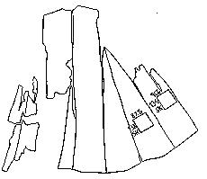
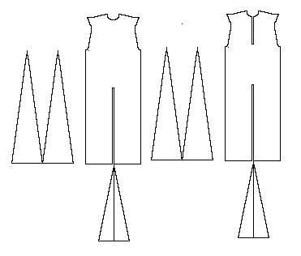

This garment from the 1200s is of a 4-shafted twill. It has 2 large side gores, and at least a narrow gore in the front center.
According to "Stella" hecaba@inspire.net.nz to 75years@yahoogroups 15 Feb 2002; Porl Grinder-Hansen, curator Danish Middle Ages and Renaissance, Nat. Mus. of Denmark had this carbon14 dated in 1998 by the AMS-laboratory in �rhus, Jutland, using the accelerator technique and calibrated according to Stuiver and Pearson 1993. It was dated to c.1280.

Go to Tunic Page; R�nbjerg Site Page or Proceed
Some Clothing of the Middle Ages - Tunics - R�nbjerg Mose, by I. Marc Carlson, Copyright 1996 This code is given for the free exchange of information, provided the Author's Name is included in all future revisions, and no money change hands-